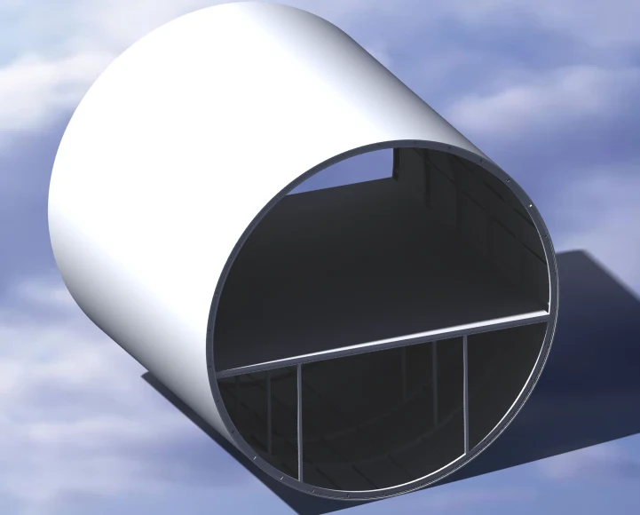
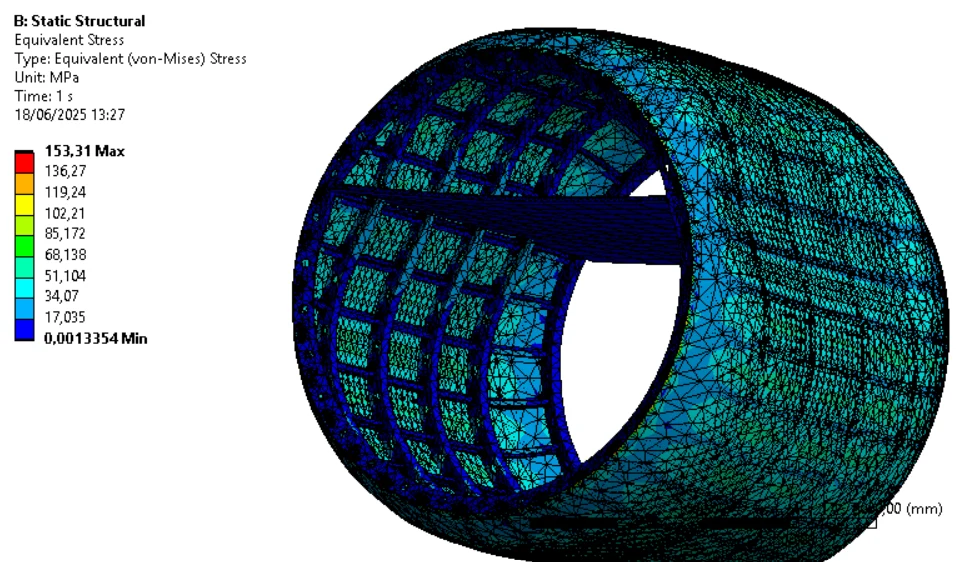

EMAN Aerospace · Academic competition
Fuselage Structural Design & Optimization
Academic project
The project
I led a team of six students on a fuselage-section design project for the EMAN Aerospace competition.
The challenge
We needed to explore weight reduction while understanding how changes to the structure affected its mechanical behavior.

My contribution
The work behind it
- 01
I coordinated the team’s design and calculation work.
- 02
We built parametric CAD and studied the fuselage section through structural calculations and static and modal FEA.
- 03
We iterated the geometry to explore the trade-offs between mass and structural behavior.
From the project
Design & analysis


Outcome
What came out of it
Our team placed second among the external participating teams. The project gave us a design study linking CAD decisions to structural analysis.
Methods & tools
- Parametric CAD
- Structural calculations
- Static & modal FEA